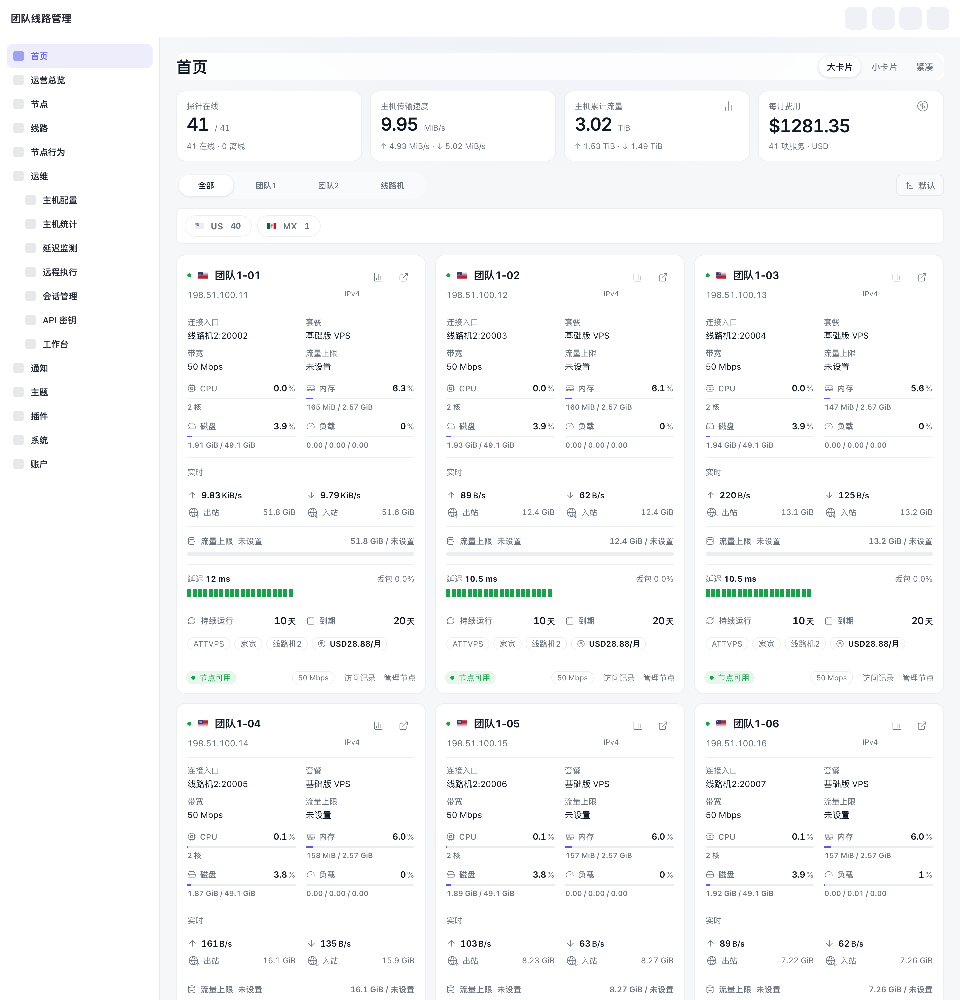
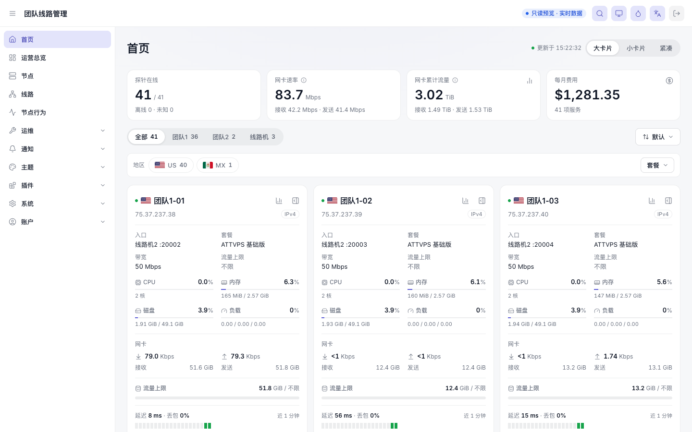

团队线路管理 · 原版 vs 精修版
2026-09-24 · 同一时刻数据（09-23 15:22 快照/副本）· 左原版，右精修版
结论：采用精修版。保留原版画风（浅灰底、白色圆角卡片、靛蓝强调、原侧栏与菜单顺序），统一六个页面的字号、表格、按钮、状态词和单位；字段一个不少，多数页面信息更多。阶段 1 以只读方式上线在 /admin/v2/，写操作深链回原版；原版页面保留。
首页（实时数据）
原版 /admin/home

精修版（实时数据，只读预览）

- 团队页签带数量；套餐显示规范名；KPI 改为网卡速率（Mbps，接收/发送）并注明口径；地区栏加套餐筛选
- 待改进：延迟条打开页面时只有 1–2 格（旧接口只给最新样本）→ 由 fleetd 在服务端保留探测历史解决
运营总览
节点
节点详情抽屉
线路
节点行为
首页（深色）
节点（手机
390px）